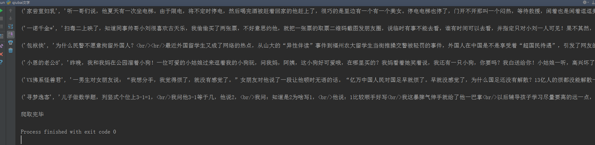
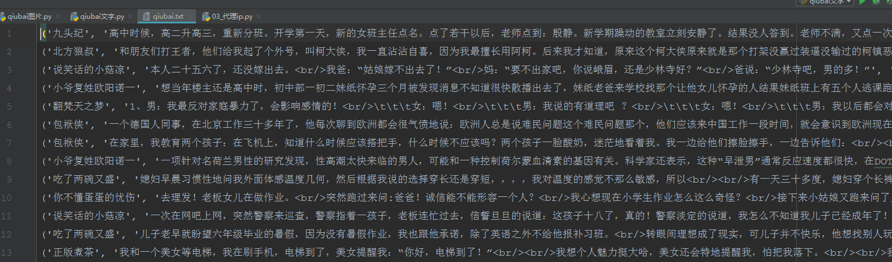

很多网站都有反爬措施，最常见的就是封ip，请求次数过多服务器会拒绝连接，如图；
在程序中设置一个代理ip，可有效的解决这种问题，代码如下；
# 需要的库
import requests
import re
from multiprocessing import Pool
# 设置代理ip
proxy = {
'https':'111.231.140.109:8888'
}
# 请求头
headers = {
'User-Agent': 'Mozilla/5.0 (Windows NT 6.1; WOW64) AppleWebKit/537.36 (KHTML, like Gecko) Chrome/65.0.3325.181 Safari/537.36'
}
# 主函数
def get_character(url):
# 请求网页，里面加入代理ip
response = requests.get(url,headers,proxies=proxy)
# 正则提取内容（作者昵称，内容，好笑数量，评论数量）
data = re.findall('<h2>(.*?)</h2>.*?<div class="content">.*?<span>(.*?)</span>.*?</div>.*?<span class="stats-vote">.*?'
'<i class="number">(.*?)</i>(.*?)</span>.*?<i class="number">(.*?)</i>(.*?)</a>',response.text,re.S)
# 遍历获取到的数据
for i in data:
# 以追加方式写入当前文件加下的qiubai.txt
with open('qiubai.txt','a+',encoding='utf8') as f:
# 转换为字符串格式，去空格，替换掉多余内容每条内容加换行
f.write(str(i).strip().replace(r'\n','')+'\n')
# 控制台打印查看爬取过程
print(str(i).strip().replace(r'\n','')+'\n')
# 程序入口
if __name__ == '__main__':
# 构造所有url
urls = ['https://www.qiushibaike.com/text/page/{}/'.format(i) for i in range(1,14)]
# 开启多进程
pool = Pool()
# 启动程序
pool.map(get_character,urls)
print('爬取完毕')控制台输出；

打开文件夹查看是否下载成功；

done